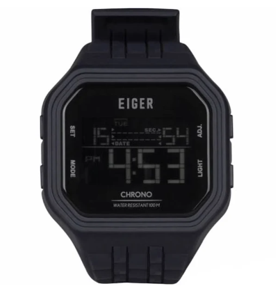

Setiap kali kita melihat tampilan layar LED atau pun LCD yang menunjukkan waktu mungkin kita berpikir bahwa itu merupakan satu teknologi yang baru. Namun sesungguhnya, manusia sudah bermain tidak hanya dengan jarum dan bayangan penunjuk, tetapi juga dengan tampilan angka langsung sejak dahulu kala. Bahkan, tampilan digital ini sudah ada sebelum jam tangan bertenaga listrik muncul.
Semua diawali dari satu mekanisme yang disebut jump-hour mechanism, pertama kali diketahui dipakai pada jam saku oleh Blondeau untuk Raja Louis-Philippe d’Orléans tahun 1830-an dan kemudian diproduksi secara semi-masif oleh Josef Pallweber tahun 1883. Pada jam biasa, terdapat jarum jam yang berputar menunjukkan waktu. Melalui mekanisme ini, pada dial terdapat lubang di mana di balik lubang itu angka jam dan menit masing-masing berada di piringan tersendiri yang terus berputar, dan waktu saat itu ditunjukkan dari angka apakah yang terlihat dari lubang tersebut. Mekanisme ini
kemudian diterapkan pada jam saku oleh Cortébert dan IWC, namun Cortébert-lah yang pertama kalinya menerapkan jump-hour mechanism pada jam tangan. Jam-jam seperti ini ada yang masih menggunakan jarum detik maupun murni dari roda yang berputar. Uniknya, desain jam tangan seperti ini ternyata masih diproduksi hingga sekarang. Jam dengan model modern seperti Oris Artelier Jumping Hour pun cukup mengacu dari desain seperti ini. Hal ini terlihat dari pergerakan angka jam yang “melompat” sehingga muncul nama “jump hour”. Selanjutnya dikembangkan pula Plato Watch yang menjadi pionir jam digital berbasis kartu yang masih ada hingga sekarang, namun tidak diterapkan pada jam tangan.
Sejarah jam tangan digital pun langsung melompat ke tahun 1970an di mana Hamilton Pulsar yang menjadi jam digital elektronik pertama di dunia muncul. Jam yang terinspirasi dari film legendaris 2001: A Space Odissey karya Stanley Kubrick itu awalnya masih mahal, sudah mulai menggunakan teknologi LED yang masih boros tenaga dan bahannya pun dari emas 18 karat. Mulai tahun 1975 jam digital menjadi terjangkau sejak Texas Instruments mulai memproduksi secara massal jam LED dalam case plastik. Harga jam tangan yang miring ini kemudian selanjutnya memaksa merk Pulsar dijual kepada Seiko, bahkan juga menjadi senjata makan tuan bagi Texas Instruments untuk meninggalkan industri jam salah satunya disebabkan jam tangan digital semakin murah sehingga profit semakin menurun.
Sejak dimulainya quartz revolution, industri jam Jepang menjadi pihak yang paling diuntungkan. Jam digital elektronik yang memang berdasarkan teknologi quartz pun berkembang pesat. Awalnya, Seiko-lah yang menjadi pemain utama dalam segmen ini. Seiko pun mengembangkan 06LC tahun 1973 yang menjadi jam digital berbasis LCD pertama di dunia. Dibandingkan dengan jam LED, jam LCD lebih hemat tenaga sehingga ke depannya jam tangan LCD lebih banyak beredar. Industri jam tangan Swiss juga ikut memproduksi prototipe jam tangan LCD yang disuplai oleh Brown, Boveri & Cie. Perusahaan ini awalnya pula menyuplai LCD ke satu perusahaan yang kemudian akan muncul sebagai raksasa jam tangan digital: Casio.
Dengan semakin berkembangnya teknologi ternyata semakin membangkitkan industri jam tangan digital. Para produsen akhirnya memiliki solusi untuk mencapai margin keuntungan yang lebih baik: menambah fitur. Mulai tahun 1980an hingga beberapa dekade ke depan dimulailah perkembangan jam tangan digital besar-besaran. Fitur-fitur antar produsen ada yang khas produsen tersebut namun banyak pula yang diterapkan oleh produsen-produsen lain. Seiko memproduksi TV Watch dan berbagai macam model lain. Bahkan pada periode ini jam tangan digital Seiko menjadi jam tangan yang dipakai dalam film-film James Bond. Citizen mengeluarkan jam digital dengan radio, voice memo, dan fungsi chronograph. Casio mengeluarkan model-model yang bisa untuk memainkan game, mendeteksi suhu, memiliki built-in GPS, menerjemahkan kata-kata bahasa Jepang ke bahasa Inggris, memiliki kamera dan lain-lain, termasuk juga mulai 1983 dirilis salah satu keluarga jam tangan digital paling ikonik sepanjang masa: G-Shock. Dari Amerika pun muncul merk Timex dengan line-up jam digitalnya terutama Datalink yang dapat disambungkan ke komputer.
Perkembangan jam tangan digital di era seperti ini tentu terus berjalan dan tidak terhenti, hingga saat ini kita melihat satu bentuk hasil perkembangan jam digital yang paling fenomenal saat ini: smartwatch. Tentu ke depan akan semakin banyak hal-hal yang semakin ditingkatkan dan berbagai macam fitur-fitur menarik yang akan kita lihat baik dari jam digital tradisional maupun smartwatch, bahkan bukan tidak mungkin batasan antar keduanya semakin kabur seiring perkembangan teknologi.